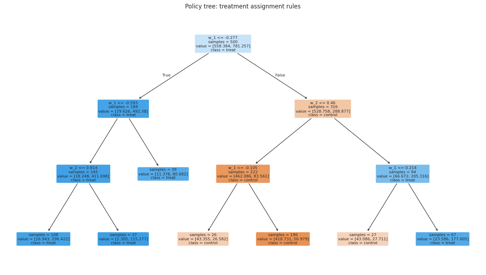

This notebook learns a deterministic treatment rule with PyCausalML. InteractiveRegressionDML estimates the average effect from doubly robust scores, and DRPolicyTree turns the sign of those scores into an interpretable tree. That is the same policy rule as DoubleML’s policy_tree().
Overview
What is the policy tree?
PyCausalML’s DRPolicyTree learns a deterministic binary treatment policy. It cross-fits outcome and propensity models, builds a doubly robust score for each unit, and grows a classification tree on the sign of that score, weighted by its absolute value. Leaves assign treatment where the score is positive.
Key Features
Deterministic policies: Assigns treatment with certainty (0 or 1)
Interpretable rules: Tree structure provides clear decision rules
Based on the IRM score: Uses the same doubly robust score as an interactive regression model
Flexible: Can use any subset of covariates for policy learning
Visualization: The fitted tree can be drawn with scikit-learn
Business Setting
A policy tree is ideal when:
Clear decision rules needed: Stakeholders need interpretable policies
Heterogeneous effects: Treatment effects vary across customer segments
IRM scores are available: You already estimate effects with a doubly robust model
Binary treatment: Treatment is yes/no (not multi-armed)
Common business applications:
Customer targeting for marketing campaigns
Credit approval decisions
Feature rollout decisions
Retention offer targeting
Setup
Install the required packages:
Code
import subprocessimport sysfrom pathlib import Pathdef _repo_root() -> Path: here = Path.cwd().resolve()for cand in [here, *here.parents]:if (cand /"pyproject.toml").is_file() and (cand /"src"/"pycausalml").is_dir():return candraiseFileNotFoundError("PyCausalML repository was not found. Run this notebook from the repository." )try:import pycausalml # noqa: F401print("PyCausalML ready.")exceptImportError: root = _repo_root() subprocess.check_call( [sys.executable, "-m", "pip", "install", "-q", "-e", f"{root}[plot]"], )print("PyCausalML installed.")
PyCausalML ready.
Code
%matplotlib inlineimport matplotlib.pyplot as pltimport numpy as npimport pandas as pdimport seaborn as snsfrom sklearn.tree import plot_treefrom pycausalml import DRPolicyTree, InteractiveRegressionDMLfrom pycausalml.policy_learners import policy_valuesns.set_theme(style="whitegrid", context="notebook")pd.set_option("display.float_format", lambda x: f"{x:,.3f}")print("Imported PyCausalML")def show_policy_tree(model, feature_names, title):"""Draw the fitted policy tree. Leaves are the assigned treatment."""ifgetattr(model, "policy_", None) isNone:print(f"{title}: constant policy = {model.constant_}")return fig, ax = plt.subplots(figsize=(14, 8)) plot_tree( model.policy_, feature_names=list(feature_names), class_names=["control", "treat"], filled=True, rounded=True, impurity=False, ax=ax, fontsize=8, ) ax.set_title(title) fig.tight_layout() plt.show()
Imported PyCausalML
Example: Synthetic Group Effects
The design follows the DoubleML group-effect example. Treatment effects depend on two covariates, with a different effect in each region.
Code
def group_effect(x):"""Define group-specific treatment effects."""if x[0] <=-0.3: te =2.2elif (x[0] >=0.2) & (x[1] >=0.4): te =2else: te =-2return tedef create_synthetic_group_data(n_samples=200, n_w=10, support_size=5):""" Creates a simple synthetic example for group effects. Parameters ---------- n_samples : int Number of samples. n_w : int Dimension of covariates. support_size : int Number of relevant covariates. Returns ------- data : pd.DataFrame A data frame with covariates, treatment, and outcome. covariates : list List of covariate column names. """ np.random.seed(42)# Outcome support support_w = np.random.choice(np.arange(n_w), size=support_size, replace=False) coefs_w = np.random.uniform(0, 1, size=support_size) epsilon_sample =lambda n: np.random.uniform(-1, 1, size=n_samples)# Treatment support support_t = np.random.choice(np.arange(n_w), size=support_size, replace=False) coefs_t = np.random.uniform(0, 1, size=support_size) eta_sample =lambda n: np.random.uniform(-1, 1, size=n_samples)# Generate covariates w = np.random.normal(0, 1, size=(n_samples, n_w))# Group treatment effect te = np.apply_along_axis(group_effect, axis=1, arr=w)# Treatment assignment log_odds = np.dot(w[:, support_t], coefs_t) + eta_sample(n_samples) t_sigmoid =1/ (1+ np.exp(-log_odds)) t = np.array([np.random.binomial(1, p) for p in t_sigmoid])# Outcome y = te * t + np.dot(w[:, support_w], coefs_w) + epsilon_sample(n_samples)# Build dataset y_df = pd.DataFrame({'y': y}) t_df = pd.DataFrame({'t': t}) w_df = pd.DataFrame(data=w, index=np.arange(w.shape[0]), columns=[f'w_{i}'for i inrange(1, w.shape[1] +1)]) data = pd.concat([y_df, t_df, w_df], axis=1) covariates =list(w_df.columns.values)return data, covariates# Generate datan_samples =500n_w =10support_size =5data, covariates = create_synthetic_group_data(n_samples=n_samples, n_w=n_w, support_size=support_size)print(data.head())
Fit DRPolicyTree on w_1 and w_2, the covariates that define the groups:
Code
# Policy on the two covariates that define the groupsfeatures = data[["w_1", "w_2"]].copy()feature_names =list(features.columns)policy_tree = DRPolicyTree( max_depth=3, n_splits=3, nuisance="gbr", n_estimators=40, random_state=42,)policy_tree.fit(features, t, y)print(f"Training policy value (IPW): {policy_tree.training_policy_value():.3f}")show_policy_tree(policy_tree, feature_names, "Policy tree: treatment assignment rules")
Training policy value (IPW): 1.143

The tree shows the decision rules for treatment assignment. Notice how the splits at w_1 ≈ -0.3 and w_1 ≈ 0.2 align with the true group effect thresholds in the data generating process.
Step 3: Use Policy for Prediction
predict() applies the learned policy to new data and returns 0 or 1:
Code
# The same generator, called again, draws a new samplenew_data, _ = create_synthetic_group_data( n_samples=n_samples, n_w=n_w, support_size=support_size)pred = policy_tree.predict(new_data[["w_1", "w_2"]])pred_df = new_data[["w_1", "w_2", "t", "y"]].copy()pred_df["pred_treatment"] = predprint("Policy predictions:")print(pred_df.head(10))print(f"Treatment rate: {pred_df['pred_treatment'].mean():.3f}")